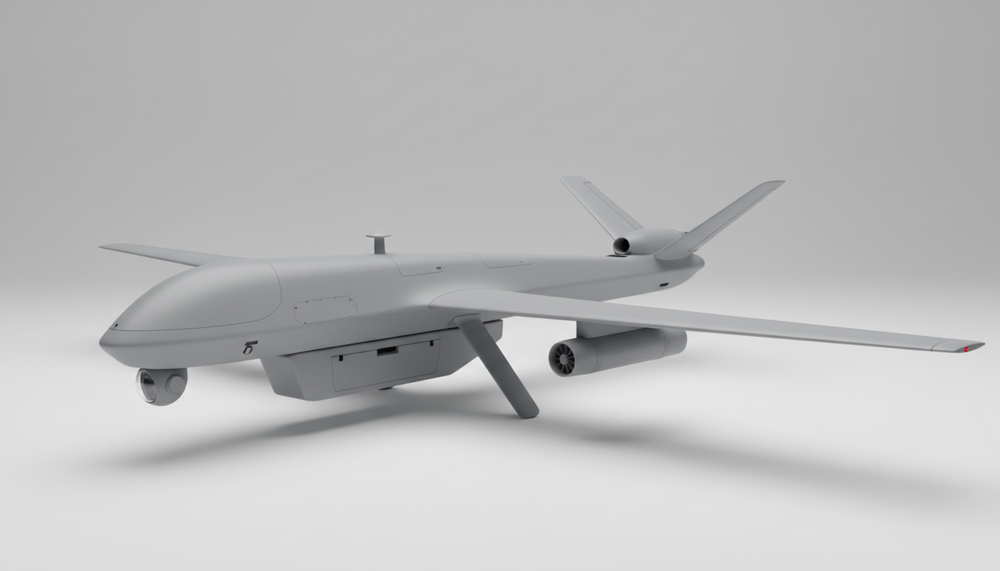

AI Design Brief
Mô tả mục tiêu, ngân sách và giới hạn. Hệ thống chuyển thành yêu cầu kỹ thuật rõ ràng.
XƯỞNG THIẾT KẾ PHẦN CỨNG CÙNG AI
Tìm một dự án phù hợp, hiểu hệ thống bên trong và đi từ bản mô tả đầu tiên đến một thiết kế có thể lắp ráp.

CAD VALIDATEDFeature tree · 96/100
CFD READY2D LBM · WebGPU 3D
MỘT WORKSPACE · TRỌN QUY TRÌNH
AeroDIY kết nối thiết kế điện, cơ khí và mô phỏng thành một quy trình có thể kiểm tra.
Mô tả mục tiêu, ngân sách và giới hạn. Hệ thống chuyển thành yêu cầu kỹ thuật rõ ràng.
Danh sách linh kiện, số lượng, giá dự toán, nguồn mua và thứ tự đặt hàng.
Feature tree tham số, exploded view và xuất FCStd, STEP, STL để chế tạo.
Hầm gió LBM 2D/3D với WebGPU để so sánh thiết kế trước khi làm thật.
Sơ đồ nguồn, tín hiệu, pinout và liên kết giữa mọi thành phần trong hệ thống.
Quy trình lắp, checklist an toàn, kiểm thử và gói tài liệu có thể tải xuống.
PROJECT EXPLORER
Khám phá theo lĩnh vực hoặc tìm kiếm theo công nghệ, nhiệm vụ và loại thiết bị.
TỪ Ý TƯỞNG ĐẾN PHẦN CỨNG
Mỗi thiết kế đi qua các gate có thể kiểm chứng trước khi mua linh kiện hoặc chế tạo.
Chốt nhu cầu, môi trường, tải trọng, ngân sách và tiêu chí thành công.
Phân rã cơ khí, điện, điều khiển; chọn linh kiện và dựng wiring.
Tạo CAD 3D, kiểm khoảng hở, khối lượng và chạy mô phỏng phù hợp.
Lắp theo checklist, test từng subsystem rồi mới vận hành toàn hệ thống.
AERODIY · OPEN HARDWARE STUDIO